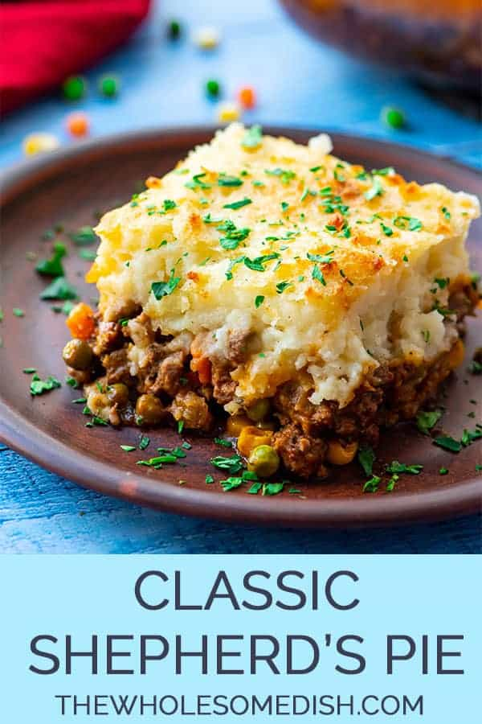

Sheperds Pie Recipe

Description
This delicious staple is both rich and full of protein and vegetables.
Ingredients
Potatoes
- 4-5 large russet potatoes
- 3 tbl butter
- 1/4 cup milk
- 1 tsp salt
- 1 tsp white pepper
- dash peprika
Filling
- 1LB ground lamb(can use ground beef as well)
- 1 large onion
- 4-6 stalks celery
- 3-5 carrots
- 1 cup mushrooms
- 1 red bell pepper
- 4 cloves garlic
- 1 1/2 cup broth(chicken or vegetable)
- 1 tbl rosemerry
- 2 tsp thyme
- 1 tsp sage
- 2 tsp salt
- 1 tsp black pepper
Steps
Potatoes